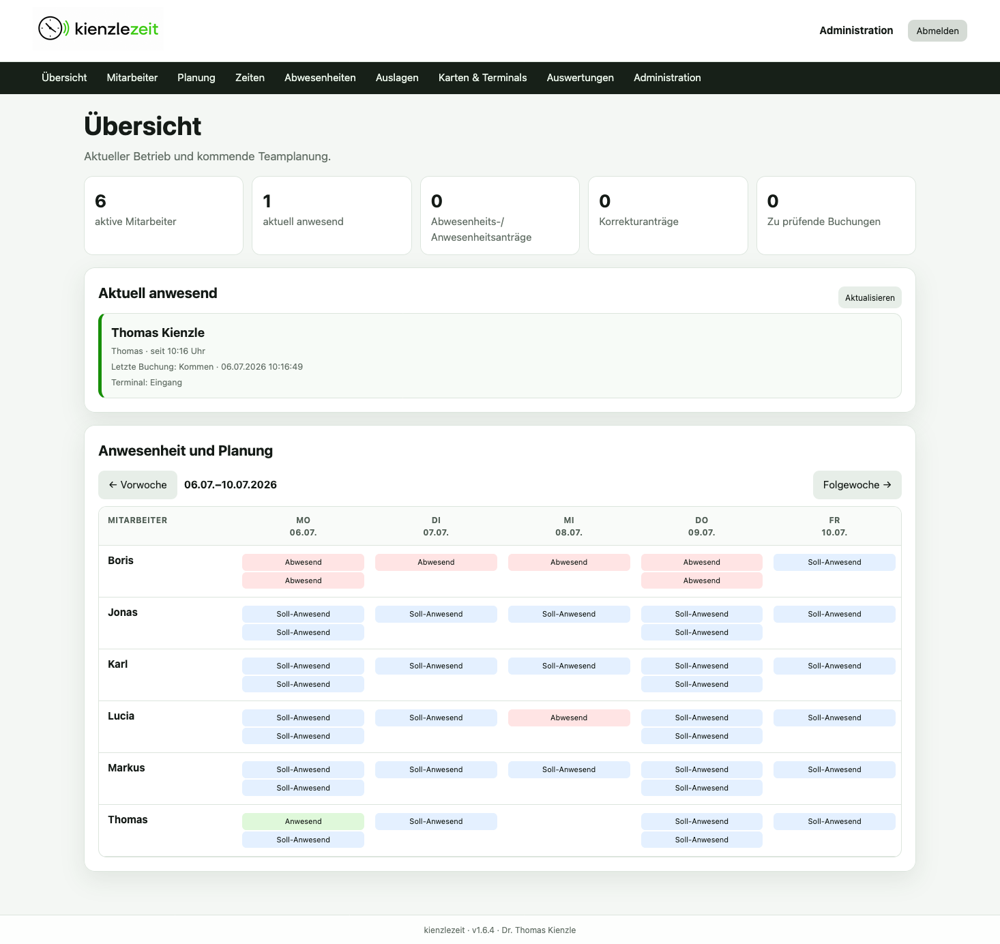
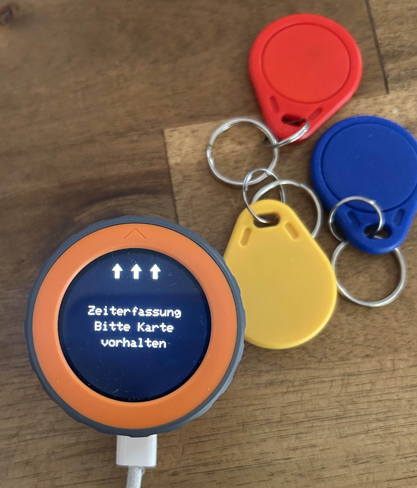
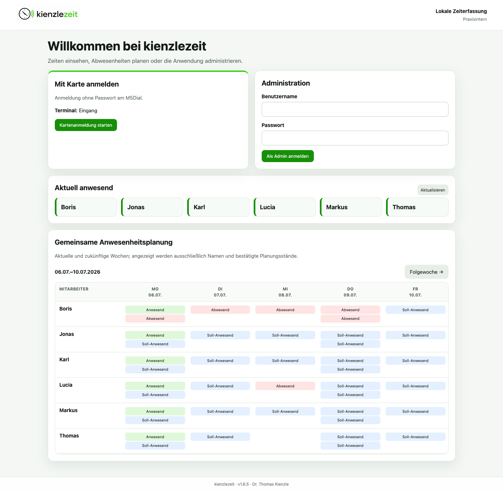
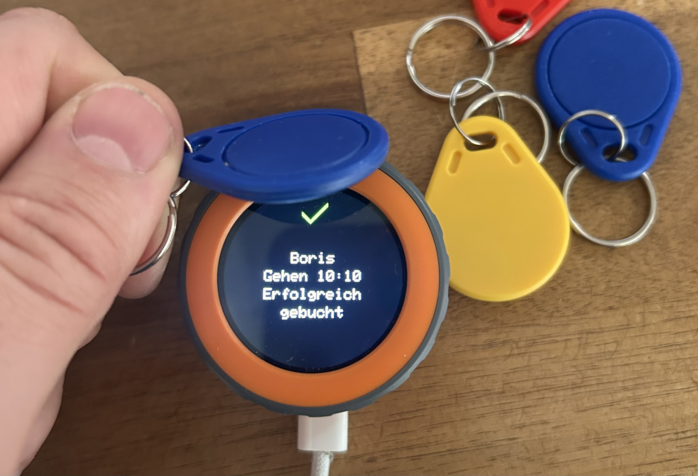
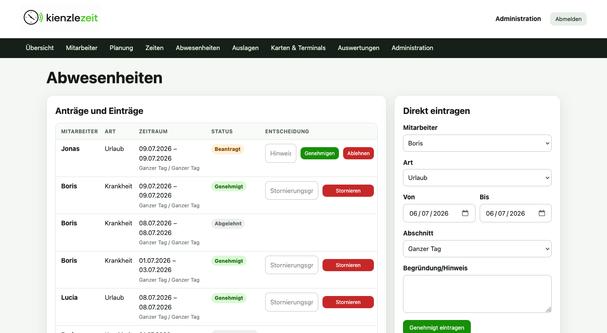
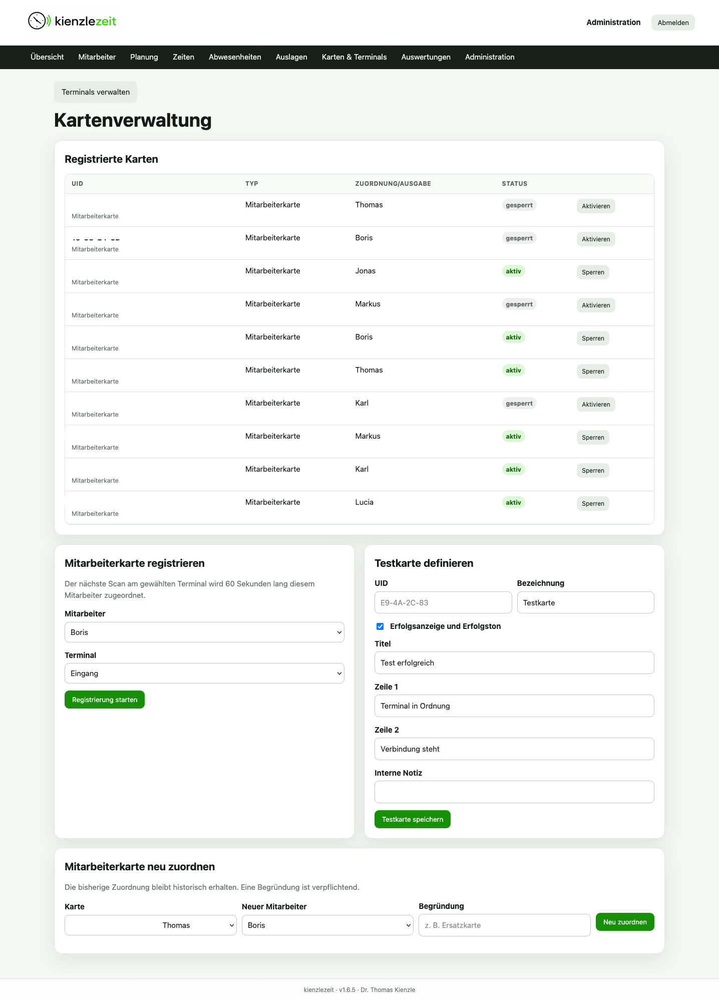
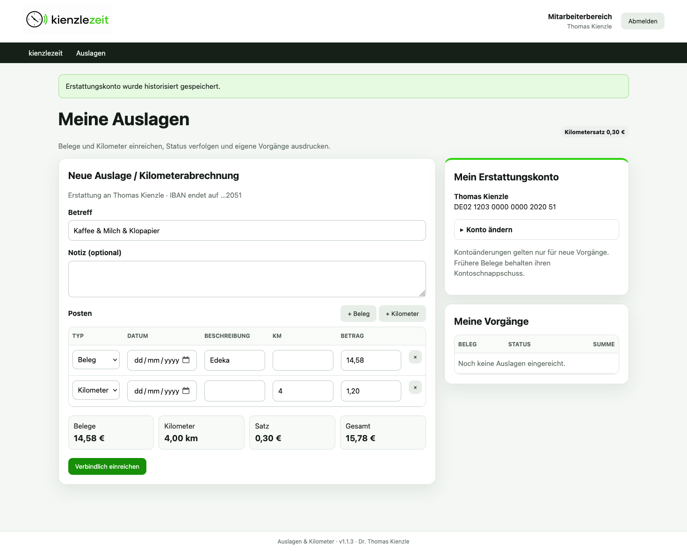
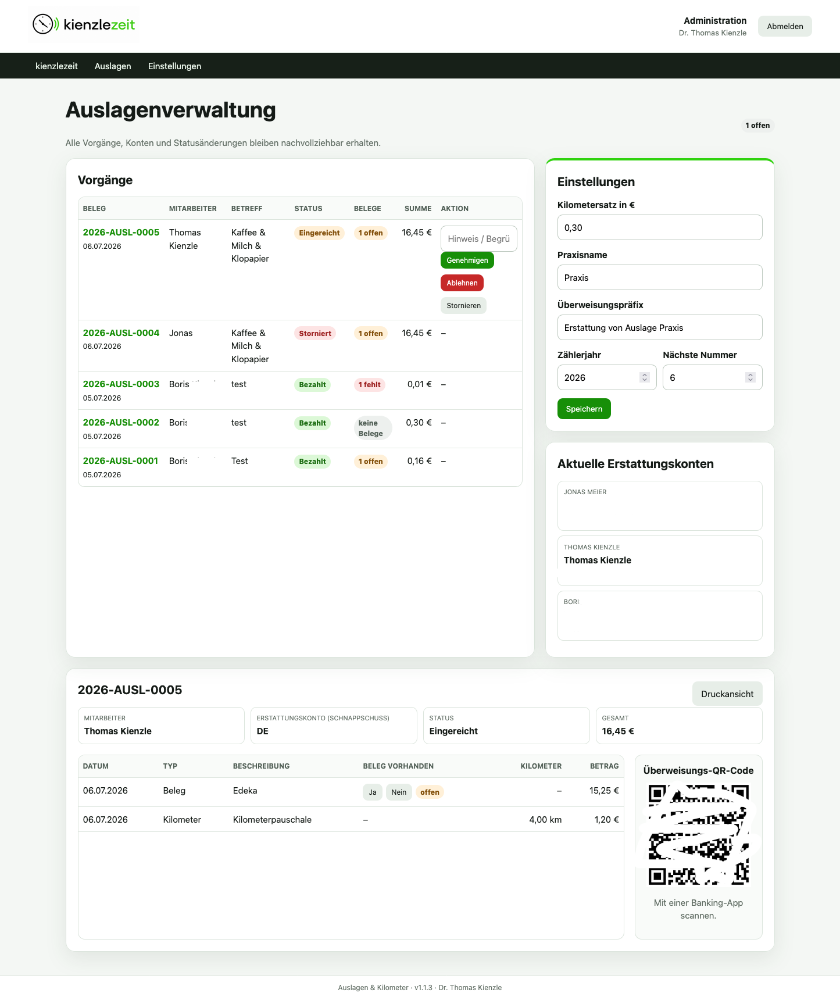

01
Team im Blick
Die Übersicht zeigt Anwesenheit, offene Aufgaben und die gemeinsame Wochenplanung auf einen Blick.



Open Source · Self-hosted · Ohne Cloud-Zwang
Karte vorhalten, Zeit buchen, fertig. Arbeitszeiten, Anwesenheiten, Urlaub und Auslagen bleiben übersichtlich im eigenen Netzwerk.
Ein rundes RFID-Terminal für den Alltag – mit nachvollziehbaren Buchungen, klarer Teamplanung und vollständiger Administration im Browser.
kienzlezeit läuft auf einem lokalen Debian- oder Ubuntu-System mit Apache, PHP und SQLite – sogar auf einem Raspberry Pi. Als Terminal dient ein M5Stack M5Dial mit RFID-Leser.
Der Installer lädt die benötigten Anwendungsdateien direkt aus dem GitHub-Repository und richtet Apache, PHP und SQLite ein.
curl -fsSL \
https://raw.githubusercontent.com/thomaskien/kienzlezeit/main/installer.sh \
-o installer.sh
chmod +x installer.sh
sudo ./installer.shBackup dringend empfohlen: Die SQLite-Datenbanken und die Schlüsseldatei sollten regelmäßig gemeinsam und auf einem zweiten Datenträger gesichert werden.
Alles an einem Ort

Die Übersicht zeigt Anwesenheit, offene Aufgaben und die gemeinsame Wochenplanung auf einen Blick.

Urlaub, Krankheit und weitere Abwesenheiten beantragen, prüfen und nachvollziehbar verwalten.

RFID-Karten registrieren, sperren oder neu zuordnen. Änderungen bleiben historisch nachvollziehbar.

Belege und Kilometer gemeinsam erfassen, Summen sofort prüfen und den Bearbeitungsstand verfolgen.

Vorgänge genehmigen, Belege prüfen und Zahlungen mit lokal erzeugtem Überweisungs-QR-Code vorbereiten.
Technische Einordnung